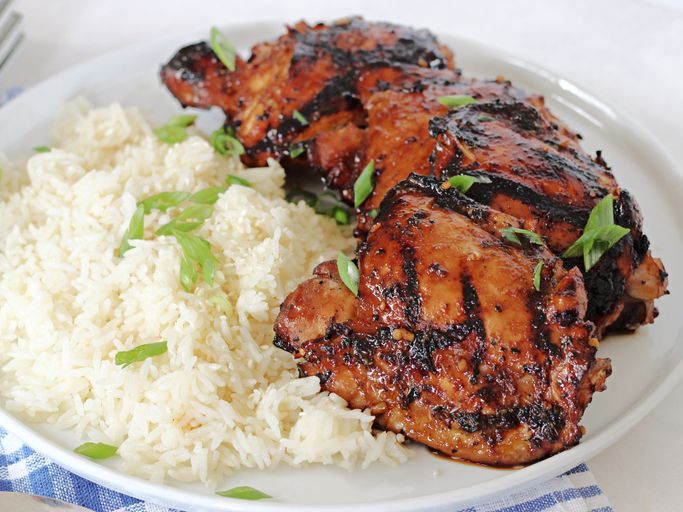

Home
Shoyu Chicken

Photo of Shoyu Chicken
Shoyu chicken s a popular, comforting local dish featuring chicken thighs braised in a savory-sweet, garlicky, and gingery soy sauce (shoyu) mixture
Ingredients
- 240 mL soy sauce
- 240 mL brown sugar
- 240 mL water
- 150 mL chopped onion
- 20 mL minced garlic
- 15 mL grated fresh ginger root
- 15 mL ground black pepper
- 15 mL dried oregano
- 5 mL crushed red pepper flakes (Optional)
- 5 mL ground cayenne pepper (Optional)
- 5 mL ground paprika (Optional)
- 2.27 kg skinless chicken thighs
Steps
- Whisk soy sauce, brown sugar, water, onion, garlic, ginger, black pepper, oregano, red pepper flakes, cayenne pepper, and paprika together in a large glass or ceramic bowl. Add chicken thighs and toss to coat evenly. Cover the bowl with plastic wrap; marinate chicken in the refrigerator for at least 1 hour.
- Preheat an outdoor grill to medium heat. Lightly oil the grate.
- Remove chicken thighs from marinade; discard remaining marinade.
- Grill chicken thighs on the preheated grill until no longer pink in the center and the juices run clear, about 15 minutes per side. An instant-read thermometer inserted into the center should read at least 165 degrees F (74 degrees C).